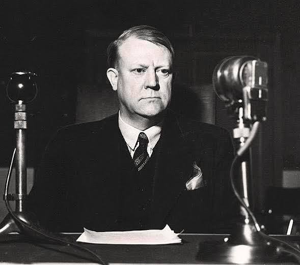
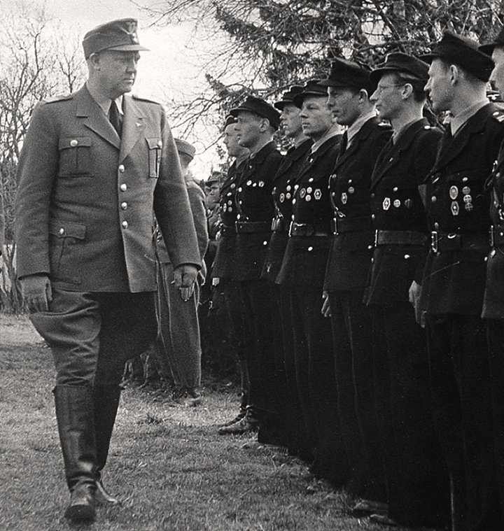
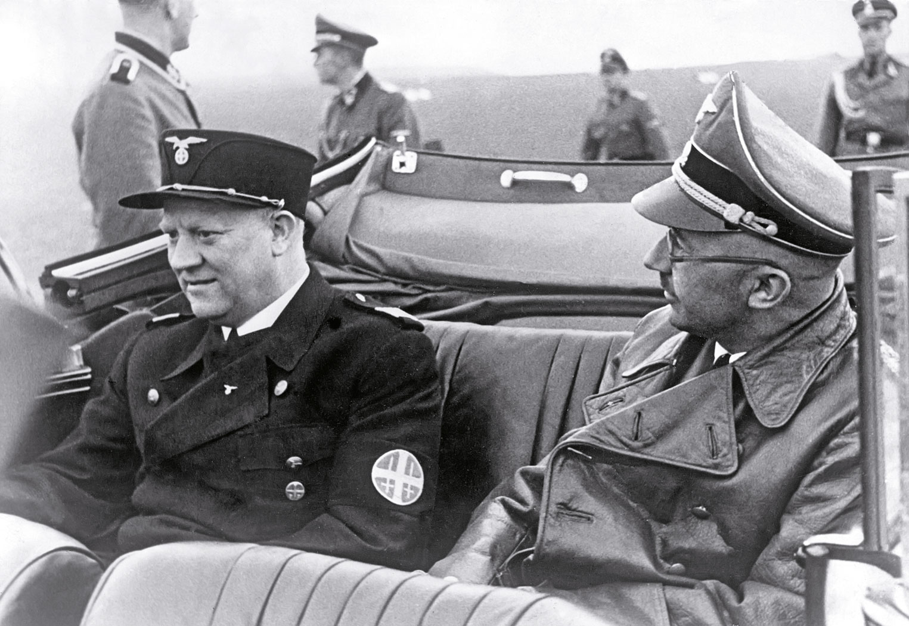

Vidkun Quisling and Collaboration in Occupied Norway
During the German invasion and occupation of Norway in World War II, Nasjonal Samling leader Vidkun Quisling became synonymous with domestic political collaboration—giving the English language the term 'quisling.'

Nasjonal Samling and the April 1940 Invasion
Before the war, Quisling founded the fascist-aligned party Nasjonal Samling, though it struggled to win broad electoral support in Norway.
When Germany launched Operation Weserübung in April 1940, Quisling attempted a coup broadcast, even as King Haakon VII and the Norwegian government rejected surrender.

Collaboration Under Reichskommissariat Norwegen
Rather than granting Quisling full authority immediately, Berlin placed occupation administration under Reichskommissar Josef Terboven before later installing Quisling as minister-president.
Quisling's regime aligned Norwegian institutions closer to Nazi ideology, meeting widespread civic and resistance opposition across the country.

Liberation, Trial, and Lasting Legacy
When German forces in Norway capitulated in May 1945, Quisling and other collaborators faced arrest and legal reckoning.
Tried for treason and other offenses by Norwegian courts after the war, Quisling left a lasting mark on how wartime collaboration is remembered.